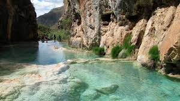
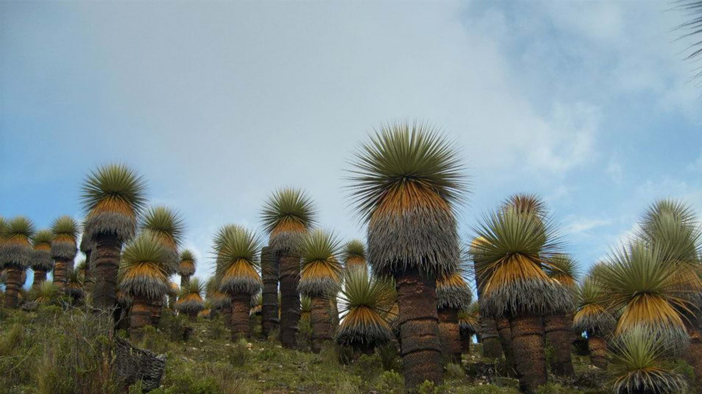

Top destinos turisticos en Perú
Ayacucho
CASCADA DE CANGALLO
Pumapaqcha, Batán y Qorimaqma son tres cascadas con propiedades mágicas y repletas de leyendas

MILLPU
Ojo, no olvides que la mejor época del año para conocer este poblado es de abril a noviembre, ya que hay un mejor clima.
VILCASHUAMAN
el principal complejo arqueológico inca que puedes encontrar en Ayacucho, al sur de Perú.

PAMPA DE Ayacucho
fue el sitio donde se realizó la Batalla de Ayacucho, el 09 de diciembre de 1824,
un enfrentamiento que selló para siempre la independencia del Perú y de gran parte de América Latina, del dominio español.

ESMERALDA DE LOS ANDES
Por su clima cálido templado es conocida como «La Esmeralda de los Andes»

TITANKAYOC
El Área de conservación regional Bosque de Puya Raymondi
Titankayocc está ubicado en el distrito de Vischongo, provincia de Vilcashuamán,
LINEAS DE NAZCA
el propósito más obvio de las líneas es que los nazca quisieron mostrar su reverencia por el mundo natural y rendir homenaje
a sus dioses, especialmente a aquellos que controlaban el clima, tan vital para una agricultura fructífera en las áridas planicies de Perú.

CAÑON DEL COLCA
El Cañón del Colca nos llena de orgullo a nivel internacional
El Cañón del Colca es el lugar perfecto para ver a una de las aves más representativas de la biodiversidad en nuestro país, el cóndor andino.

LA LAGUNA 69
La caminata a la Laguna 69 es el viaje perfecto de un día para todos los amantes de las montañas y la naturaleza.
Ya que haces tu propia caminata, rodeado de increíbles vistas de montañas, caídas de agua, quebradas y animales deambulando.